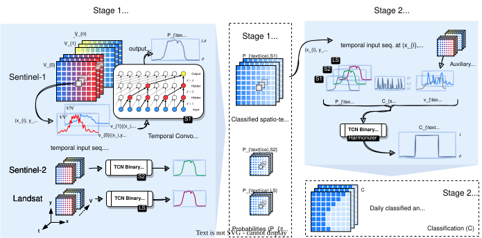
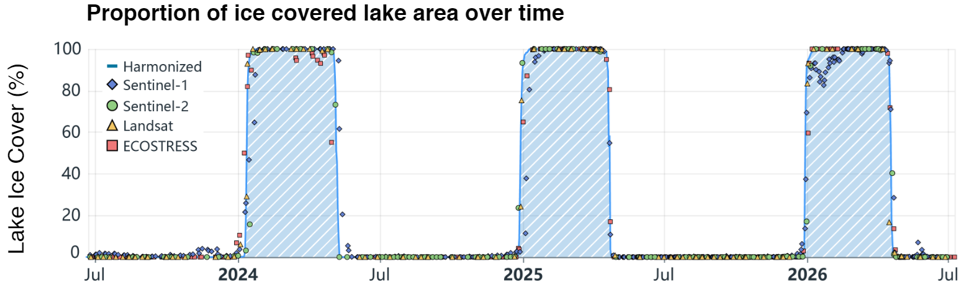

High-resolution lake ice monitoring using multiple Earth observation missions
Michael Brechbühler ![]()
Hendrik Wulf
Daniel Odermatt
What is this paper all about?
Lake ice cover provides a variety of ecological and cultural ecosystem services, and its loss can lead to consequences such as reduced water quality, oxygen depletion, and increased algal blooms. With increasing pressure from climate change, the timing of seasonal lake ice freeze-up and break-up — referred to as lake ice phenology — is shifting. Research has shown that lakes across the Northern Hemisphere are experiencing progressively earlier ice-off dates, later ice-on dates, and shorter ice durations, with some lakes failing to freeze entirely (Sharma et al. 2021). Due to its critical importance in characterizing the Earth’s climate, lake ice cover has been designated by the Global Climate Observing System (GCOS) as one of the Essential Climate Variables (World Meteorological Organization 2022), making its measurement vital for understanding and predicting the Earth’s climate.
We present an Earth Observation (EO) satellite–based approach designed to close in on the GCOS ECV target of daily 50-meter measurements, enabling large-scale monitoring of lake ice cover and phenology with high spatial and temporal detail. In addition, we propose a projection framework that links climate model outputs with our derived ice phenology metrics to assess future lake ice conditions up to the year 2100 under multiple air-temperature forcing scenarios.
Our study area, the European Alps
The European Alps host a large number of natural lakes and reservoirs across a wide range of elevations, climatic conditions, and geomorphological settings. In recent decades, temperatures in the Alps and the peri-alpine region have risen at twice the rate of the northern hemisphere (Dokulil 2022). This pronounced environmental heterogeneity and climatic pressure makes the Alps a natural laboratory for investigating spatial patterns and long-term changes in lake ice cover.
Lakes within the Alpine region differ strongly in size, elevation, depth and catchment characteristics. As a result, seasonal ice regimes vary from long-lasting and stable ice cover at high elevations to short, intermittent, or increasingly absent ice cover at the lower plateaus. Capturing this diversity is essential for understanding Alpine lake ice phenology.
The spatial extent of our analysis is defined by the perimeter of the Alpine Convention, which encompasses the European Alps across eight countries. This region spans pronounced elevation gradients, from low-lying forelands to high Alpine terrain, resulting in strong climatic contrasts over relatively short distances. These elevation-driven gradients play a central role in shaping lake ice formation, persistence, and break-up.
Within the Alpine Convention perimeter, there are more than 3,000 lakes, including both natural lakes and artificial reservoirs. These water bodies are distributed across the entire Alpine arc and occur in a wide range of geomorphological and climatic settings. Together, they represent the full diversity of Alpine lake types relevant for regional-scale ice monitoring.
For our analysis, we restrict our study to lakes larger than 5 hectares (0.05 km²) to ensure robust and consistent ice detection across sensors and seasons. This selection yields a set of over 1,300 study lakes. These lakes span a broad elevation range and are predominantly small to medium-sized, with most lakes falling between 0 and 1 km² in surface area. Importantly, the selected lakes are distributed across both lower and higher elevations, capturing the full range of Alpine ice regimes.
A smaller subset of lakes is used for model calibration and validation. These training lakes are spatially distributed across the Alps and cover a wide range of lake sizes, elevations, and climatic conditions. For each of these sites, independent ground-based reference data based on webcam imagery were collected.


The webcam image sequences capture the full seasonal ice cycle, including freeze-up, break-up, and mid-winter ice conditions, in a visually interpretable way. These observations are manually annotated and used to label satellite observations at coinciding acquisition times, providing the foundation for our ice modelling framework.
What is the approach we use in this paper?
Our framework combines satellite observations from 11 satellites across the Landsat, Sentinel-1, Sentinel-2 missions and including ECOSTRESS onboard the ISS. Together, these satellites provide optical, thermal, and active microwave imagery, each offering complementary information on lake surface conditions during winter. By combining sensors with different strengths and limitations, we overcome trade-offs in spatial resolution and observation frequency, enabling monitorin@cr-methods-lakeg at the scales required to resolve seasonal lake ice cycles.
Our dataset currently includes Landsat-7 ETM+, Landsat-8 OLI/TIRS, Landsat-8 OLI-2/TIRS-2; Sentinel-1A/B/C/D C-SAR; Sentinel-2A/B/C MSI and ECOSTRESS data.
To integrate these complementary data sources, we use a two-stage supervised binary classification approach built on temporal convolutional networks (TCNs). TCNs are deep learning architectures suited for sequence-to-sequence tasks. In the first stage, separate sensor-specific models independently estimate the probability of ice presence for each irregular satellite observation. In the second stage, these estimates are harmonized across sensors and time to generate gap-filled, daily lake-ice classifications.

The resulting daily per-pixel ice classifications are aggregated to lake scale to generate time series of lake ice cover. From these, we derive key phenology metrics including freeze-up and break-up dates and ice cover duration for each winter season.

Finally, we link the observed lake ice phenology from 2015 to 2026 with coincident air temperature data to quantify lake-specific freezing requirements. Using a freezing-degree-day (FDD) threshold approach, we relate the cumulative winter cooling required for lake freezing to air temperature projections under different climate scenarios (RCP2.6, RCP4.8, RCP8.2). This enables estimates of how frequently lakes are expected to freeze in the future and helps identify regions and elevation ranges where lake ice may become rare or disappear entirely over the coming decades.
References